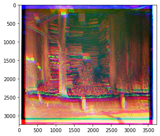
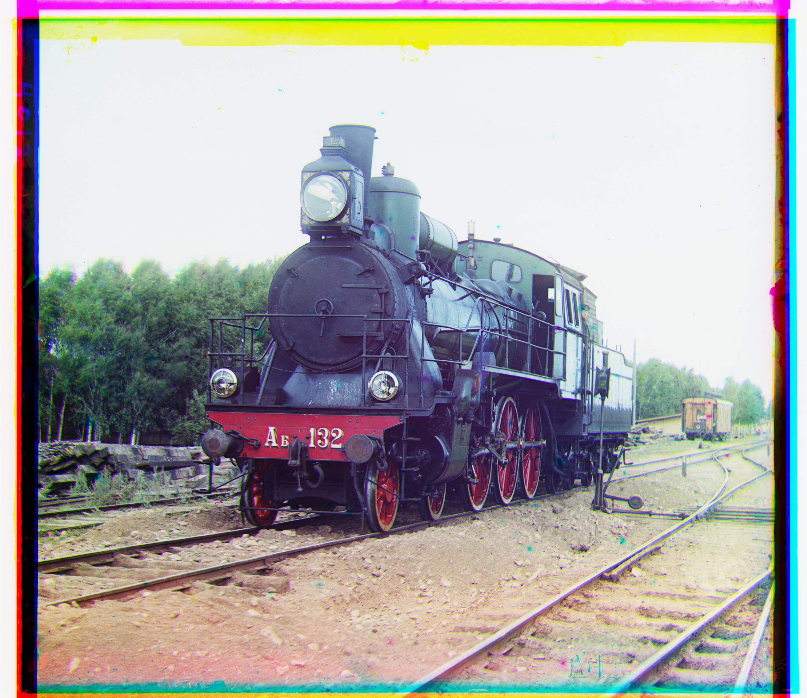
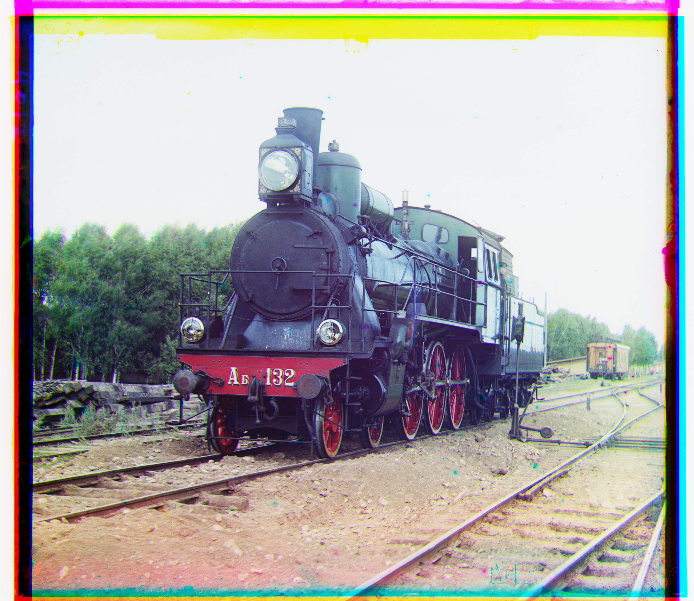

Aligning and compositing images of the Prokudin-Gorskii photo collection
What follows is an incomplete, in-progress report on my work for this project...
Prokudin-Gorskii
Sergei Milkhailovich Prokudin-Gorskii (1863-1944) was a Russian chemist and photographer, best known for his cutting-edge methods of color photography. On trips sponsored by Tsar Nicholas II, Prokudin-Gorskii documented, with thousands of images, the Russian empire between the years 1905 and 1915. In 1948, the resulting collection was purchased by the US Library of Congress.
Prokudin-Gorskii's method involved capturing three separate negatives, each with a different filter, either red, blue, or green. This set of negatives can be combined to produce a full color image.
Aligning an image
Images can be downloaded from the collection in the following form.

The three sections correspond to blue, red, and green filters respectively from top to bottom. My task is to align these three color channels. Simply dividing the image in three equal parts and overlaying them results in a misaligned, fuzzy mess.
Clearly, we need to align these channels. We'll search for the correct allignment by leaving the blue channel alone and trying to match the red and green channels on top of it. A candidate alignment for the red or green channel is just a translation some number of pixels in each direction, horizontal and vertical. We need a metric for comparing various candidate alignments. Image alignment metrics like sum of square differences or normalized cross correlation are a tempting starting point, though some colors in the final image may have drastically different brightness values across the three color channels. For this reason, those metrics rely on brightness variability throughout the image. For now I'll try a metric that I expect will apply better to this problem. Consider the difference between a pixel and its neighboring pixel to the right. For patches of pixels in the colorized image that have consistent color, this value will be similar (low) across all three channels. This may hold true even when there are changes in lighting. Therefore, my initial metric for the alignment will be the sum of square differences in these neighboring pixel differences. I'll compute these differences for both vertical neighbors and horiztonal neighbors, adding both to the sum.
Here's what happens when we try all translations of distance at most 5% of the image's longer side. The metric described above is minimized by the following alignment.

Speeding up the algorithm
As described so far, this alignment algorithm is quite slow even for small images (~300px). For larger images (~3000px), it runs for minutes before I give up and move on. To make it faster, let's try a coarse to fine search. An image scaled down to small size requires examining many fewer candidate alignments since each pixel is a larger proportion of the image. Now, we try scaling images down to just 60px side length on their shorter side, performing the search, and then inching the image back towards the full scale. At each step in between, we only bother searching within the pixels corresponding to the previous solution plus or minus a bit. Now we can start to align higher resolution images in seconds instead of minutes. Finally, we make the observation that for a sufficiently complicated image, aligning the whole image isn't necessary. Instead, a small patch of the image can be aligned, and that alignment is also correct for the whole image. This last observation really depends on the images being aligned, but I found that taking just the middle 20% of the image was sufficient for aligning all images given in the assignment. At this point, the algorithm can align all the images provided in the assignment in under a minute.Sources
[1] Assignment from Professor Pless[2] Wikipedia entry on Prokudin-Gorskii
Sneak peak higher resolution image...
 
